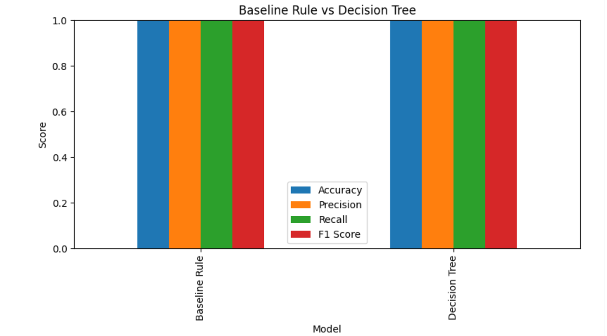
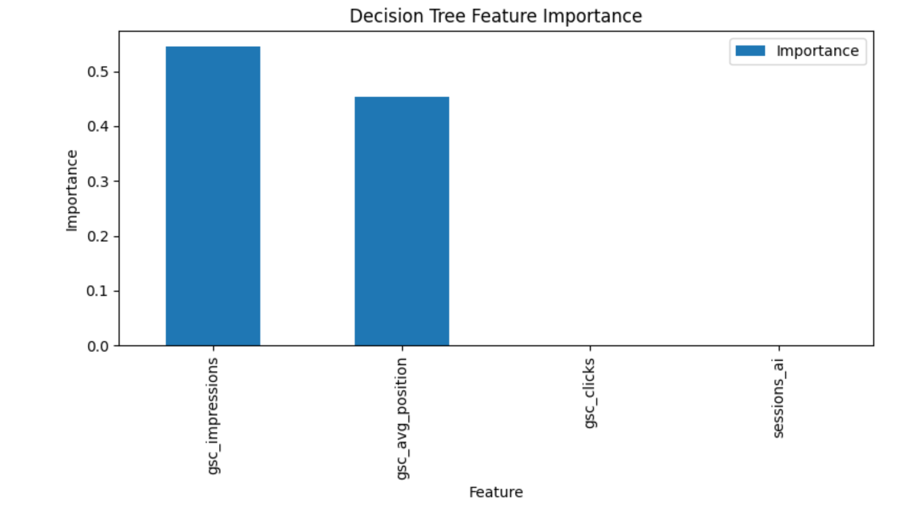

FlyRank Machine Learning Internship Capstone Project
A proof-of-concept machine learning workflow for identifying content pages that may require refreshing based on historical search performance metrics.
This study presents a proof-of-concept machine learning workflow for identifying content items that may require refreshing based on historical search performance indicators. The analysis uses anonymized search intelligence data from the FlyRank Internship – Pseudonymized Warehouse Release (v20260703). A rule-based baseline and Decision Tree classifier were evaluated to determine whether machine learning can support content review prioritization. The developed workflow provides decision-support recommendations and does not claim to predict search engine rankings or replace human editorial judgment.
Can historical search performance metrics be used to identify content pages that are likely to require refreshing?
This project supports editorial and SEO decision-making by identifying pages that show characteristics associated with possible content refresh opportunities. The model produces ranked review suggestions that content teams can evaluate before making publishing decisions.
This study uses the FlyRank Internship – Pseudonymized Warehouse Release (v20260703). The analysis focuses on the fact_content_daily_performance table, containing daily performance records for clients and content items.
| Dataset Component | Description |
|---|---|
| Release | FlyRank Internship – Pseudonymized Warehouse Release (v20260703) |
| Table | fact_content_daily_performance |
| Analysis Window | January 2025 |
| Filtering Rule | Only rows where gsc_data_available IS TRUE were included. |
Client names, URLs, domains, private search queries, and identifying information were excluded. Only pseudonymized identifiers provided by the dataset were used.
The objective was to build an interpretable model that identifies content items requiring review based on search performance signals.
A rule-based baseline was created using manually defined thresholds based on impressions, clicks, average position, and AI referral sessions.
The baseline rule and Decision Tree model were evaluated using the same train/test split. The objective was to compare whether a machine learning approach could provide additional value compared with manually defined rules.
| Model | Accuracy | Precision | Recall | F1 Score |
|---|---|---|---|---|
| Baseline Rule | 1.000 | 1.000 | 1.000 | 1.000 |
| Decision Tree | 1.000 | 1.000 | 1.000 | 1.000 |

Figure 1. Baseline Rule versus Decision Tree evaluation metrics.
This study represents a proof-of-concept workflow and should be interpreted carefully.
Based on the baseline approach and Decision Tree output, the following actions are recommended for content review.
| Priority | Recommended Action | Reason |
|---|---|---|
| High | Review pages with very low clicks and poor average ranking positions. | These pages may have content optimization opportunities. |
| High | Improve pages with high impressions but few clicks. | Possible click-through improvement opportunity. |
| Medium | Monitor pages receiving AI referral sessions. | AI traffic may become an additional performance signal. |
| Low | Maintain currently performing pages. | No immediate review signal detected. |
The deployed paper includes outputs generated directly from the notebook experiments.

Figure 2. Decision Tree feature importance generated from the trained model.
| Feature | Importance |
|---|---|
| gsc_impressions | 0.545786 |
| gsc_avg_position | 0.454214 |
| gsc_clicks | 0.000000 |
| sessions_ai | 0.000000 |
The complete implementation is available in the project repository. The analysis can be reproduced by running:
The notebook contains dataset loading, preprocessing, modelling, evaluation, and artifact generation steps.
This project was completed as part of the FlyRank Machine Learning Internship program.
Dataset credit: FlyRank Internship – Pseudonymized Warehouse Release (v20260703).
FlyRank: https://flyrank.ai